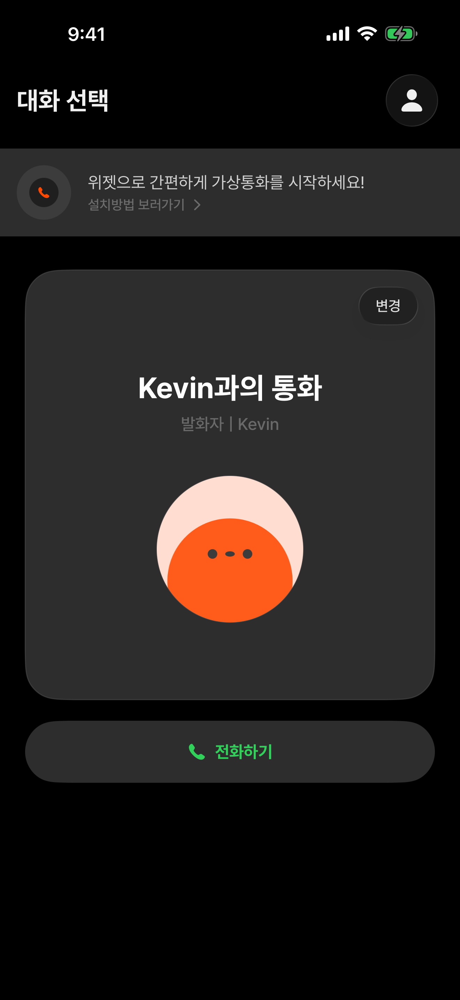
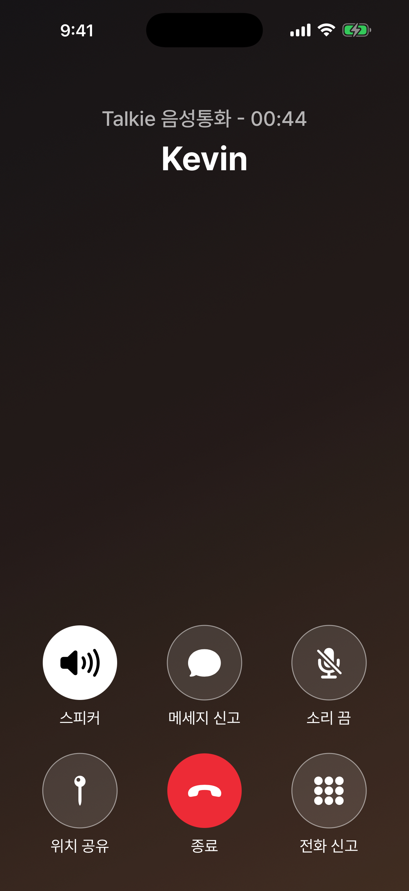
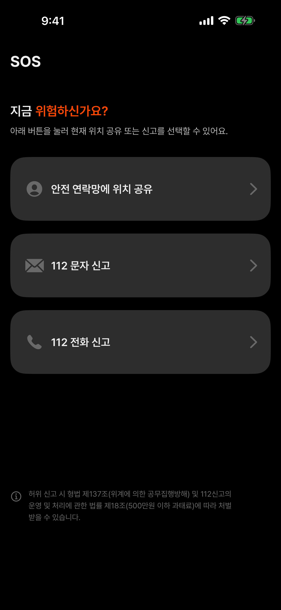

빠른 위젯 실행
홈 화면에서 선택한 가상 통화를 바로 시작합니다.
Virtual call for uneasy moments
상황에 맞는 대화를 고르고 자연스러운 가상 통화를 시작하세요. 필요할 때 위치 공유와 112 신고로 바로 이어갈 수 있습니다.
Talkie 살펴보기
HOW IT WORKS
현재 상황에 맞는 상대와 시나리오를 선택합니다.
말하기와 무음 구간에 맞춰 준비된 대화가 이어집니다.

통화를 끊지 않고 위치 공유와 112 문자·전화를 실행합니다.

홈 화면에서 선택한 가상 통화를 바로 시작합니다.
사용자 목소리와 주변 소리를 기기에 기록하고 직접 관리합니다.
사용자가 켠 경우에만 지원되는 데이터와 녹음을 개인 iCloud에 보관합니다.
IMPORTANT
실제 보호나 범죄 예방을 보장하지 않습니다. 즉각적인 위험 상황에서는 112에 직접 신고하고 주변의 도움을 요청하세요.